@c6reviews.
@c6reviews.In honor of Star Trek's 60th anniversary today, I've compiled a list of sixty moments from some classic live-action Trek shows.
The best moments? No.
The most iconic moments? Not necessarily.
The funniest moments? Nope.
Just sixty moments that I chose entirely subjectively, and I will neither explain nor defend my selections!
Happy 60th birthday, Star Trek!
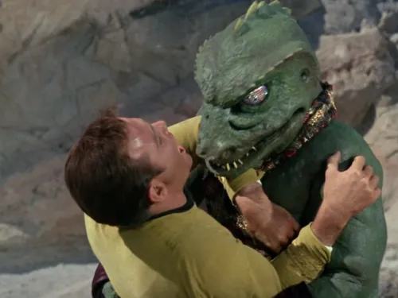
1. Kirk fights the Gorn(1967) May we never forget the day that Captain Kirk fought this ridiculous rubber suit in one of the slowest, most lethargic hand-to-hand fights on television, from TOS 1x18: Arena.
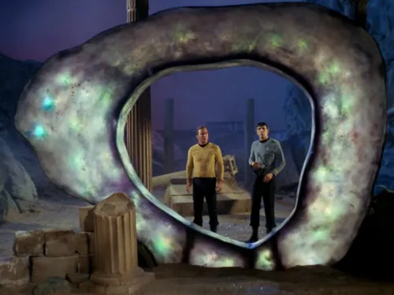
2. Kirk and Spock encounter the Guardian of Forever(1967) TOS 1x28: The City on the Edge of Forever is a highly-regarded fan favorite episode from The Original Series. In it, Kirk and Spock encounter the Guardian of Forever, a portal which transports them to New York City in the year 1930, where they play an important role in a touching and memorable story and learn a hard lesson about preserving the timeline.
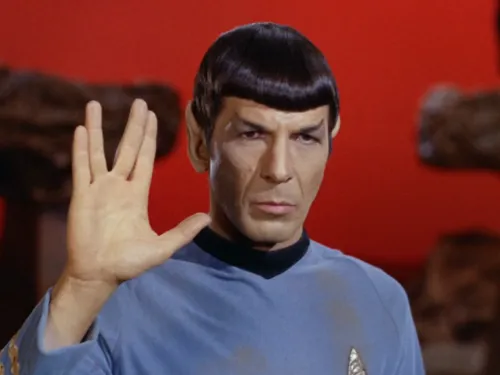
3. Live Long and Prosper(1967) Spock presents the Vulcan salute and traditional message for the first time in TOS 2x01: Amok Time, and it became an icon representing the Star Trek franchise. 🖖 Live long, and prosper.
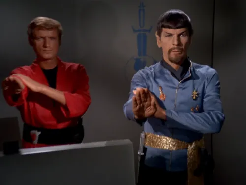
4. First foray into the Mirror Universe(1967) TOS 2x04: Mirror, Mirror is the first episode in the Star Trek franchise to crossover to the “Mirror Universe”, an alternate reality where everyone is, well, kind of evil. And sometimes they have goatees. The Mirror Universe would become a realm to be explored in several other Trek series: Deep Space Nine, Enterprise, Discovery, and Prodigy.
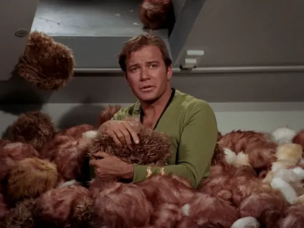
5. Kirk buried in tribbles(1967) This iconic moment from the iconic episode TOS 2x15: The Trouble with Tribbles is one that can be recognized even by non-fans of Star Trek. “The Tribble episode” gives us a humorous story about tiny, cute balls of fur that, unfortunately, reproduce at an astonishing rate. This story is famously revisited in the DS9 episode, DS9 5x06: Trials and Tribble-ations.
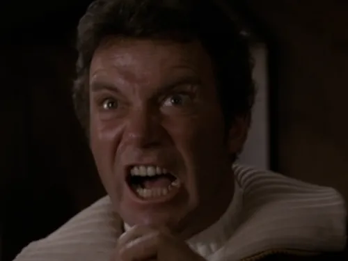
6. KHAAAAAAN!!(1982) There are few moments across Star Trek that make it into pop culture or mainstream media, but Kirk's iconic scream in Star Trek II: The Wrath of Khan is one of them. Reaching a breaking point with Khan Noonien Singh, Kirk screams into his communicator at Khan, and his voice echoes loudly through space. Well, not really, since sound doesn't travel through space but... metaphorically, sure!
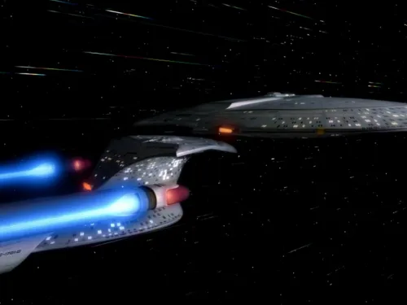
7. The Enterprise‑D separates(1987) Star Trek: The Next Generation premiered with the feature-length episode TNG 1x01/02: Encounter at Farpoint. In it, the new Enterprise NCC‑1701‑D shows off its superpower: it separates into two ships! This ability was originally supposed to be used more often in the show, but because of how the separation sequence puts a halt to the storytelling, the Enterprise only separated four total times in the entire franchise!
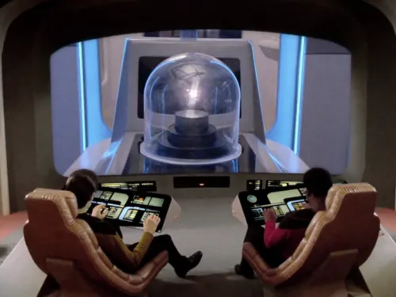
8. Ugly giant bags of mostly water(1988) The Enterprise encounters a new kind of inorganic life form in TNG 1x18: Home Soil, and after finally establishing communication, the life form calls the humans “ugly giant bags of mostly water” – not because it was being critical, but simply for a lack of a better description!
Spoiler »
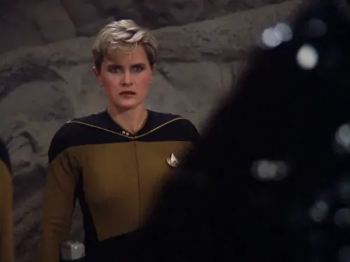
9. Armus kills Tasha Yar(1988) In an unexpected first-season twist, security chief Natasha Yar is killed by a malevolent tar-like entity known as Armus in TNG 1x23: Skin of Evil – and this wasn't some sci-fi reincarnation story. Tasha Yar, a main character, died before she could even get through the first season. Her loss is felt deeply among the crew and the fans, though she would be seen for twice more in special guest appearances...
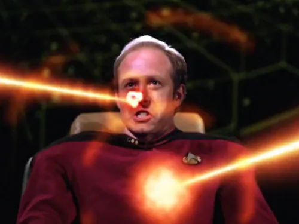
10. Remmick's head explodes(1988) In the notably-unresolved story from TNG 1x25: Conspiracy, a man's head quite literally explodes, and the subsequent damage left a grotesque, smoking, hollowed-out corpse on display. This scene was cut from the BBC airing, and the episode received a viewer discretion warning on Canadian television. It's certainly a moment I'll never forget!
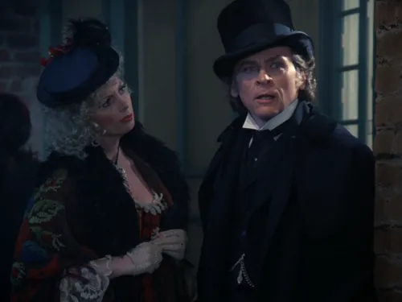
11. Moriarty becomes sentient(1988) In TNG 2x03: Elementary, Dear Data, a holodeck recreation of Sherlock Holmes' nemesis, Moriarty, unintentionally becomes self-aware when members of the crew try to program a story capable of outsmarting Data. The moment that sentience is breathed into Moriarty (played by Daniel Davis), he says he feels like a “new man”. Although he only appeared in two episodes of the series, the character left a lasting impression, and he even made one more cameo appearance in a season three episode of Star Trek: Picard.
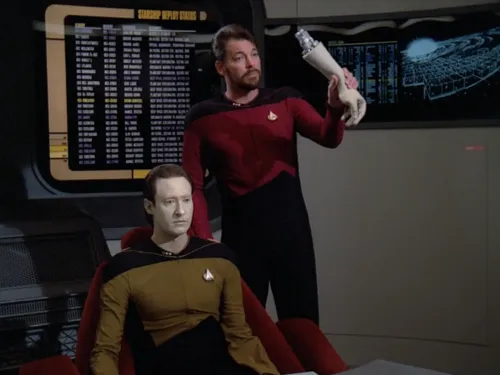
12. Riker shuts off Data(1989) When the question of Data's rights as an android is litigated in a formal hearing, Riker is placed in the unenviable position of acting as the petitioner's counsel, fighting against Data's rights. In the course of his research, Riker discovers that Data has an “off switch”, which he has kept private, only once previously sharing the information with Doctor Crusher. In a dramatic display in the courtroom, Riker removes Data's arm and then proceeds to completely deactivate him in front of everyone, for all to see that Data is just a machine. These events take place in the episode TNG 2x09: The Measure of a Man.
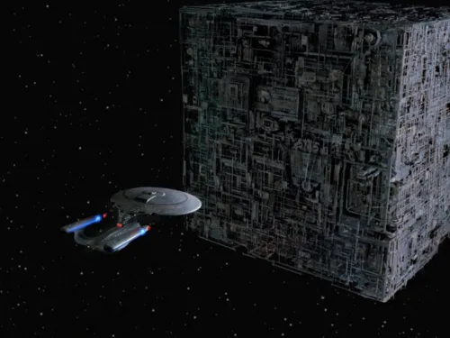
13. The Enterprise encounters the Borg(1989) When Q flings the Enterprise a great distance to another part of the galaxy, the ship is dwarfed by a gigantic cube manned by cybernetic drones with a singular consciousness. Here, in TNG 2x16: Q Who, humanity's greatest threat in the 24th century is first encountered.
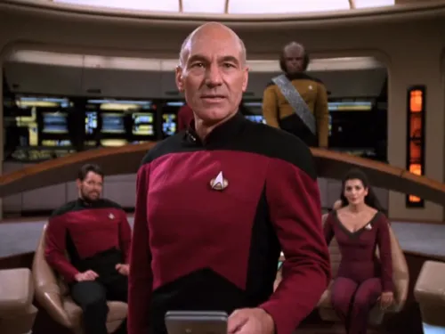
14. Picard owns the Sheliak(1989) In TNG 3x02: The Ensigns of Command, this moment, without explosions or hand-to-hand combat or other edge-of-your-seat action, is simply one of my favorites. In fact, not only is it actionless, but one wouldn't be entirely wrong to call it “boring”, with Picard going on at length with lines like “pursuant to paragraph one thousand two hundred and ninety...”. But that's what's so great about it. The Sheliak had been beating Picard over the head with this lengthy treaty, weaponizing the legal technicalities within the document to get their way. Picard finally found a legal loophole within the treaty that would force the Sheliak to back down, and so he gleefully reads out the exact paragraphs and subsections. And when the Sheliak balk at granting his request, Picard drops the oh-so-satisfying bomb, “Then I hereby declare this treaty in abeyance” and cuts off communication before the Sheliak can respond. It's a thing of beauty.
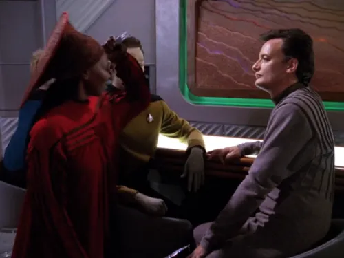
15. Guinan stabs Q with a fork(1990) In TNG 3x13: Deja Q, after Q appears on the Enterprise claiming that he has lost his powers, Guinan takes it upon herself to test his claim by stabbing him with a nearby fork. When Q cries out in pain, Guinan seems satisfied, saying “Seems human enough to me”. This rivalry between Q and Guinan is explored even further in Star Trek: Picard Season 2.
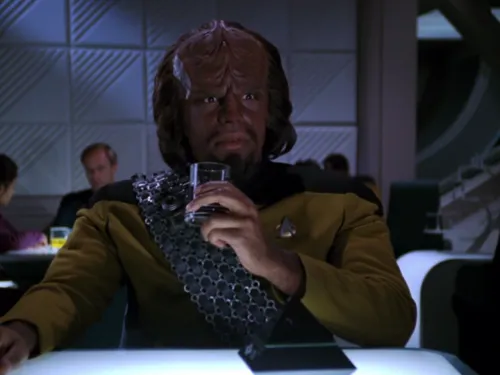
16. Worf tries prune juice for the first time(1990) This unassuming moment comes from one of the best episodes of the entire series, TNG 3x15: Yesterday's Enterprise, and it actually has almost nothing to do with the main story. This episode is remembered for its grim alternate timeline, the introduction of the Enterprise‑C, and the return of Tasha Yar, so one could easily forget that in the opening teaser, Guinan introduces Worf to prune juice, which he immediately dubs a “warrior's drink”. Worf's love of prune juice would continue to be an occasional running gag that would follow him even to Deep Space Nine.
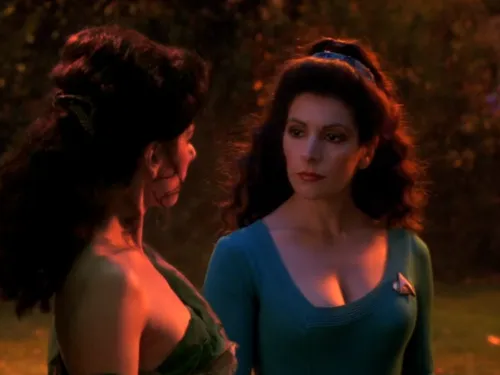
17. Troi tells the Goddess of Empathy to “muzzle it”(1990) In the episode that first introduces Lt. Reginald Barclay, TNG 3x21: Hollow Pursuits, some of the senior staff stroll through a holodeck scene created by the problematic junior officer. It appears that Barclay has recreated the likenesses of some of the crew and placed them in his absurd fantasy. At first, Troi cautions the others about taking it too seriously, and is herself a little amused at the whole situation – that is, until she happens upon a recreation of herself, who welcomes them with the words “I am the Goddess of Empathy! Cast off your inhibitions and embrace love, truth, joy!” Suddenly not in such a bemused state, Troi approaches the hologram and says, “Muzzle it!”
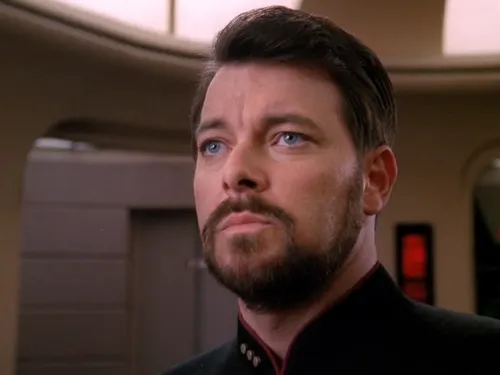
18. “Fire”(1990) TNG “The Best of Both Worlds”
Spoiler » In TNG 3x26: The Best of Both Worlds (Part I), Captain Picard is assimilated by the Borg, leaving Riker in command of the Enterprise. When all other options are exhausted, Riker has no choice but to fire a superweapon at the Borg vessel, even though Picard is still on board. Riker essentially orders the death of his captain with one simple word, “Fire”, after which the screen cuts to black and then displays the words “To Be Continued...” Fans had to wait over three months for Part II, to find out the consequences of Riker's order.
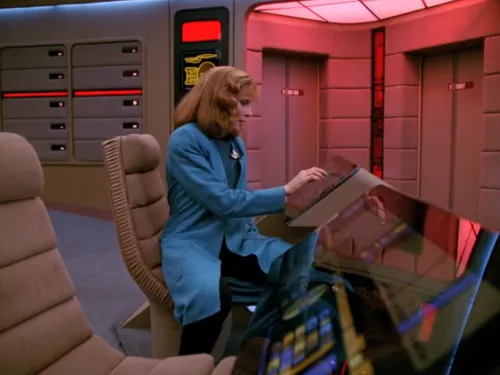
19. “If there's nothing wrong with me... maybe there's something wrong with the universe!”(1990) Perhaps my favorite line ever uttered in all of Star Trek, Doctor Crusher sums up my feelings any time things don't go my way. After a particularly stressful day questioning her own sanity in TNG 4x05: Remember Me, Doctor Crusher finally comes to the conclusion that she is not crazy, so her problems must be the universe's fault!
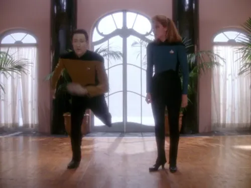
20. Crusher teaches Data to tap dance(1991) In TNG 4x11: Data's Day, we get insight into a somewhat-average day for Data, learning ever so slowly to trust his instincts and better interact with the humans around him. On this day, Data asks the doctor to teach him to dance. During the humorous lesson in the holodeck, Data quickly masters tap dance, but then struggles with a simple waltz.
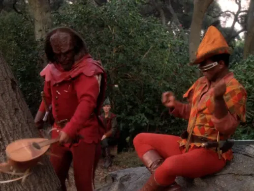
21. Worf smashes Geordi's lute(1991) After being whisked away by the God of Mischief, Q, to Nottingham forest and made to play out the parts of Robin Hood's merry men in TNG 4x20: Qpid, Worf takes a therapeutic moment to smash the lute which Geordi had been absentmindedly plucking. He hands the destroyed instrument back to La Forge and calmly says, “Sorry”.
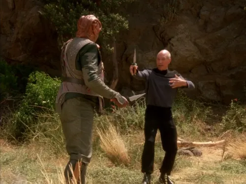
22. Picard establishes communication with the Children of Tama(1991) Darmok and Jalad at Tanagra! This iconic line has been printed on T-shirts and the like. It may not have been intended to become such a memorable line, but it was repeated numerous times during the episode, and the episode itself is pretty good, making this line go down in history as synonymous with The Next Generation. In TNG 5x02: Darmok, Picard and a fellow captain from a Tamarian ship struggle to communicate while trying to work together in a pitched battle against a dangerous foe. Finally, after some time, Picard unlocks the key to understanding the Tamarian language. Sokath, his eyes open!
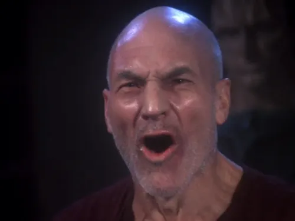
23. “THERE... ARE... FOUR! LIGHTS!”(1992) If you're not too familiar with TNG, you may have seen this iconic line printed on a t-shirt or a coffee mug... or in a meme... and assumed it was some funny line that all the fans share as some kind of in-joke. While sometimes still used lightheartedly, the line's actual context is quite dark. In Chain of Command, Part II, Picard had been a prisoner of the Cardassians and subjected to both physical and psychological torture for about eight days. Gul Madred was Picard's torturer, and throughout their time together, Madred would illuminate four lights and ask Picard how many lights he saw. Madred insisted that there were five lights, and any time Picard defiantly said there were only four, Madred would subject Picard to intense pain. Finally, on the day that Picard was to be released, Madred tried once more to get Picard to capitulate and say that there were five lights despite that being clearly untrue. Picard remained in silence, staring at the lights, until the guards came to remove him. Once he knew that he was going free, Picard turned to Madred and hollered the iconic line, “THERE... ARE... FOUR! LIGHTS!”
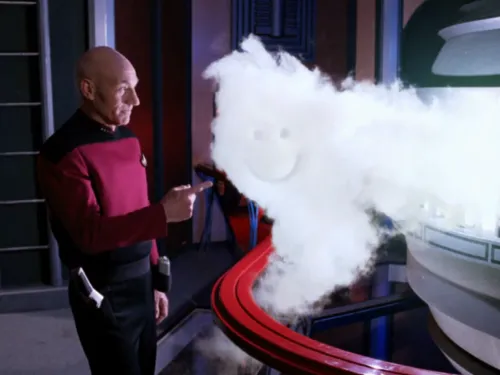
24. Core breach smiley face(1993) In TNG 6x25: Timescape, Picard, Data, Geordi, and Troi return to an Enterprise that has been frozen in time. In engineering, a core breach has occurred, with the explosion stopped mid-blast. Proving wrong anyone that says Captain Picard is incapable of whimsy, he takes a moment to enjoy the humor of the situation by using his finger to draw a smiley face in the deadly cloud.
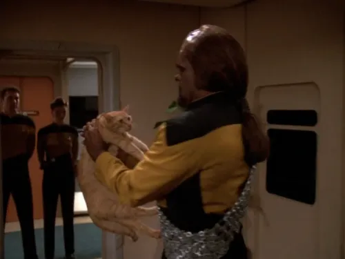
25. Worf sneezes in Spot's face(1993) Poor Spot! In TNG 7x06: Phantasms, Data begins experiencing hallucinations that lead him to perform violent acts. Afraid that he might hurt his cat, Spot, he asks Worf to take care of the feline until Data's hallucinations stop. Worf, clearly unsure what to do with the cat, holds Spot awkwardly as he leaves Data's quarters. Just before it cuts to the next scene, Worf sneezes right in poor Spot's face in a hilarious moment that seemed almost a little uncharacteristic for TNG!
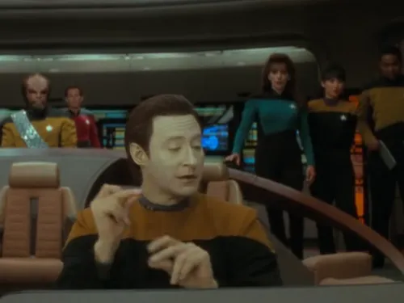
26. Data just loves scanning for life forms(1994) For all of his life, Data operated almost entirely without emotions (perhaps a stray one here and there). Well, finally in the film Star Trek: Generations, Data gets an upgrade that allows him to feel the full range of human emotion. The new emotions are still a little unstable, however, as Data gets used to the upgrade. Earlier in the film, he was overcome by fear and unable to help his friend, Geordi. In this scene, however, Data has learned that Geordi is all right, which puts him in a good mood. When Riker asks him to scan for life forms, Data improvises a short musical number about his love of scanning, which gets the attention of everyone on the bridge.
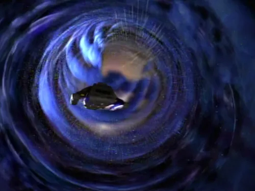
27. Ben Sisko and Jadzia Dax discover the wormhole(1993) In the series premiere of Star Trek: Deep Space Nine, DS9 1x01/02: Emissary, Commander Benjamin Sisko and Lieutenant Jadzia Dax discover the only known stable wormhole in the galaxy, leading them to the Gamma Quadrant and kicking off the seven-season story for the show.
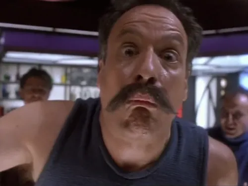
28. Sisko punches Q(1993) In DS9 1x07: Q-less, Sisko establishes himself as a different kind of commanding officer, saying “I'm not Picard” after having punched Q rather than putting up with his antics.
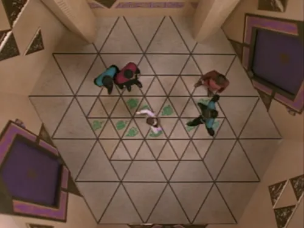
29. Allamaraine!(1993) The senior staff at DS9 are forced to play games by their visitors, the Wadi, and those games include a bit of a hopscotch-and-rhyme challenge. I can't imagine why DS9 1x10: Move Along Home is not a well-liked episode, unless people didn't enjoy watching four grown adults play hopscotch! “Allamaraine, count to four, Allamaraine, then three more. Allamaraine, if you can see, Allamaraine, you'll come with me!”
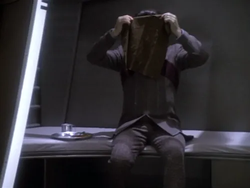
30. A Cardassian war criminal awaits execution(1993) Perhaps the first great episode of DS9, DS9 1x19: Duet marks an important moment of growth for Kira, as she begins to realize that the brutal Cardassians who occupied her homeworld for fifty years might not all be deserving of hatred. Kira is assigned to interrogate a Cardassian prisoner named Marritza, played by Harris Yulin, and their interaction is what makes this episode a bit of a masterpiece. In this moment, Marritza covers his face with a cloth as he says that he awaits execution.
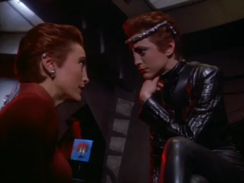
31. Kira crosses over to the Mirror Universe(1994) DS9 2x23: Crossover: Many years after Kirk's accidental trip to the Mirror Universe, Major Kira finds herself in the upside-down, slightly eviler version of her own reality, and comes face to face with... herself. This episode kicked off a five-episode serial about the alternate universe in DS9 which followed up on Kirk's original story.
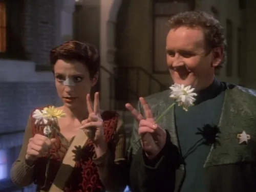
32. Kira and O'Brien briefly visit 1967 Earth(1995) DS9 3x12: Past Tense, Part II: While searching for Sisko, Bashir, and Dax, who had been lost in time on Earth, Kira and O'Brien briefly appear in 1967 where they're provided with flowers by a young hippie couple flashing peace signs. In a moment of bad timing, Kira and O'Brien are beamed away right in front of the couple's eyes. The hippies are impressed and, since there was no contamination of the timeline, it's safe to assume that they were probably a little zooted at the time.
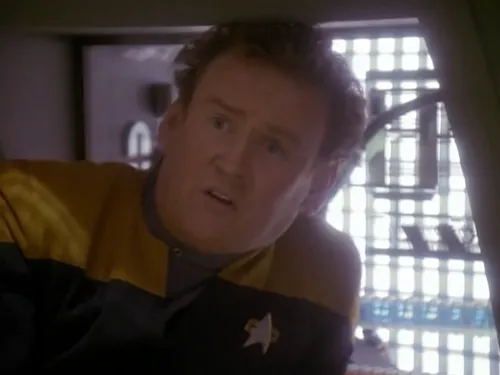
33. O'Brien vehemently denies flirting with a Cardassian scientist(1995) In DS9 3x15: Destiny, O'Brien works with a Cardassian scientist named Gilora. Their relationship is strained, with Gilora not really giving O'Brien any sort of equal partnership in the work. While working in a Jefferies tube, Gilora's demeanor seems to have changed as she is now showing interest in the Chief. When she finds out that O'Brien is married, she says “Then why have you been leading me to believe that you... wanted me?” and the Chief's honest response makes me laugh every time, “I haven't!”
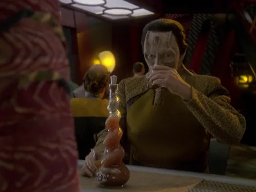
34. Quark asks Garak to try root beer(1995) The season 4 premiere of DS9, DS9 4x01/02: The Way of the Warrior was a memorable one, introducing Worf to the show and setting a new tone for the next four seasons. One small gem in this episode is a simple scene between Quark and Garak at the bar, when Quark asks for Garak's thoughts on root beer. More than just a beverage in this context, the two use the sweet, bubbly drink as a metaphor for the Federation.
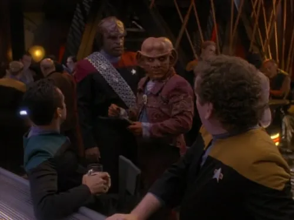
35. “Now?!”(1996) In DS9 4x17: Accession, Quark tells Worf the good news: O'Brien's wife Keiko is going to have another baby! Worf immediately responds with a very concerned, “Now?!” Poor Worf! During an emergency on the Enterprise‑D in TNG 5x05: Disaster, Worf had to deliver Keiko's first baby while they were trapped in the ship's bar, and apparently the event was a bit traumatizing for him. The idea of being present in the bar when Keiko is having another child was a bit too much for him to bear.
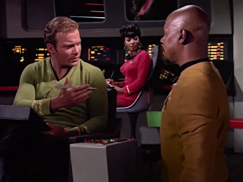
36. Sisko gets Kirk's signature(1996) The crew of the Defiant accidentally go back in time to James Kirk's era and must solve a mystery before it's too late, in DS9 5x06: Trials and Tribble-ations. Sisko insists that the crew be very cautious to avoid inadvertently altering the timeline while they're in the past, but after their mission was a success, Sisko takes a chance by posing as a lieutenant and getting Kirk's sign-off on some ship's paperwork.
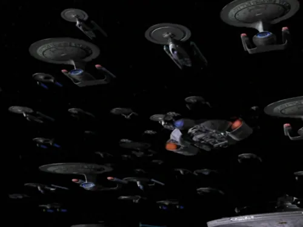
37. Starfleet engages the Dominion en route to retake Deep Space Nine(1997) DS9 6x06: Sacrifice of Angels marks an important change in Star Trek visual effects production. The massive space battle between the Federation and the Dominion/Cardassian fleet in this episode was envisioned to involve hundreds of ships, making their traditional method of motion-control filming of physical miniatures impractical. This was the first Trek episode to exclusively use CGI for its battle scenes, and the results are quite impressive for their time.
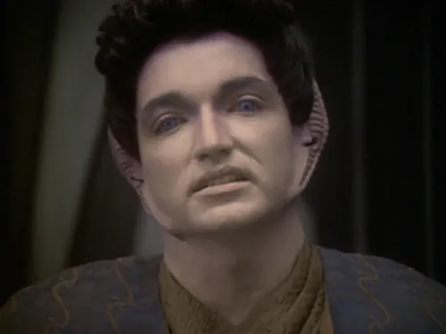
38. “I hate Ferengi”(1997) When the Vorta named Keevan is taken as a prisoner exchange for Quark's mother, he must endure the antics of an eclectic group of ill-prepared Ferengi. Clumsy mistake after clumsy mistake, Keevan's nightmare culminates in DS9 6x10: The Magnificent Ferengi when he is accidently shot and killed by a poorly-aimed rifle. His last words before collapsing to the floor: “I hate Ferengi”.
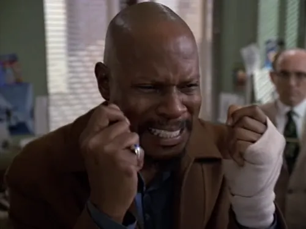
39. Benny's breakdown(1998) DS9 6x13: Far Beyond the Stars is a bit of a departure from the norm on Deep Space Nine, but it is a glorious departure. The crew of the space station are transported to 1950s Earth where they play the roles of science-fiction writers. In this emotionally-charged scene, Benny (Ben Sisko) is fired from the writing staff when an executive didn't approve of his story which featured a black man in a prominent role. Benny's breakdown is one of those heart-wrenching scenes that you'll never forget.
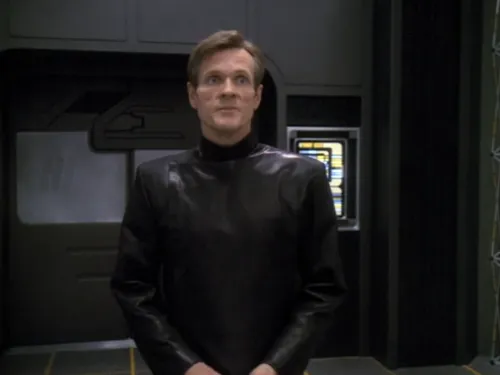
40. Luther Sloan reveals himself(1998) I suppose this is a bit of a spoiler for the episode DS9 6x18: Inquisition, which tells a story about Luther Sloan, posing as Starfleet Internal Affairs, and his obsessive interrogation of Dr. Bashir. After enduring Sloan's attitude all day long, Dr. Bashir is finally made privy to the truth: Sloan actually works for the shadowy black-ops division of Starfleet Intelligence known as Section 31. This was the episode which first introduced Section 31 into the franchise, and its story would continue to be told in other series like Enterprise, Discovery, and Picard. You would think the clandestine organization would play an important role in the straight-to-streaming film Star Trek: Section 31, but if you'll excuse the editorializing for a moment, the connection between that film and the actual Section 31 is entirely arbitrary.
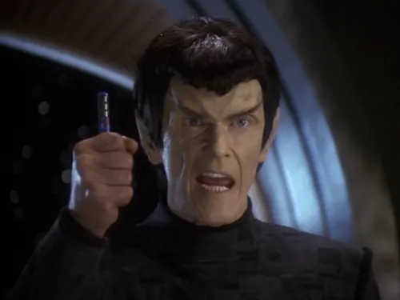
41. “It's a faaaake!”(1998) This often-memed moment from DS9 6x19: In the Pale Moonlight is remembered for the absurdity of its delivery. The episode is an iconic one, showing the great lengths that Sisko is willing to go to win the war, even at the cost of his own self-respect. It's a bit of a cautionary tale about slippery slopes, and it has a strong moral message. In this critical moment of the story, Sisko attempts to pass off a forgery to a Romulan Senator, and his plans are crushed when the Senator successfully determines that... “It's a faaaake!”
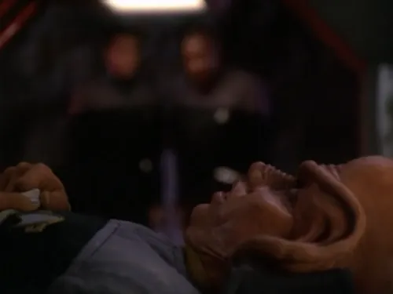
42. Nog loses a leg(1998) In another controversial episode, DS9 7x08: The Siege of AR-558, DS9 explores more dark themes that some found to be antithetical to Star Trek's primarily-optimistic viewpoints. However, this story unapologetically looks at the horrors of war in a very realistic way, and I don't think it's something we should pretend doesn't happen, just to preserve the optimistic story. While under siege by the Jem'Hadar, Nog is hit during a skirmish, and the doctor has no choice but to amputate his leg. Since this is the 24th century, he is later able to receive a new leg at a hospital, but the trauma of what happened to him will carry on to a future episode that will look into the truths about PTSD.
Spoiler »
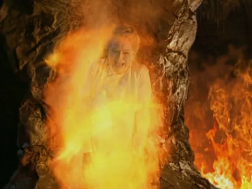
43. Winn burns alive in hellfire(1999) Too good for her, I say! Winn Adami was an insidious villain throughout the entire seven seasons of Deep Space Nine, constantly ruining our heroes' plans and being a constant frustration. In the series finale, DS9 7x25/26: What You Leave Behind, Winn finally gets what's coming to her in what should have been a satisfying comeuppance for the horrible person: she is literally burned alive in the hellfire of the Pah-Wraiths. Still, it somehow just doesn't feel like quite enough... like she deserved a worse fate, somehow.
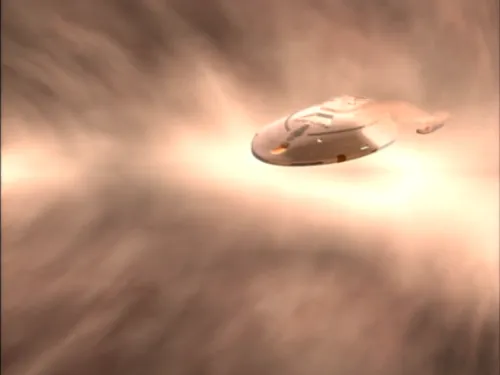
44. Voyager is swept away to the Delta Quadrant(1995) In the series opener VOY 1x01/02: Caretaker, the USS Voyager is catapulted to the other side of the galaxy, kicking off their story as they begin the 70-year journey back to Earth.
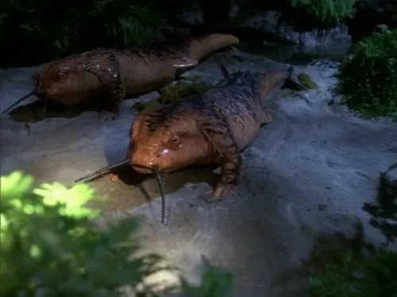
45. Janeway and Paris have salamander-babies(1996) There was obviously no way that this moment wouldn't have made this subjective list. In what is regarded as the worst episode of Voyager, VOY 2x15: Threshold, Tom Paris and Captain Janeway travel at Warp 10, that is, infinite velocity, a mathematical concept that somehow became a reality. And since they occupied every point in the universe simultaneously (yes, seriously), that obviously caused them both to hyper-evolve. Now, we know that populations involve, not individuals, but this episode throws science right out the airlock! After “evolving” into clearly inferior salamander-like creatures, Tom and Janeway decide to have babies. Obviously since they evolved, this was a well-reasoned decision made by very self-aware, superior brains, and not some instinct-driven animal behavior! Right? Right??
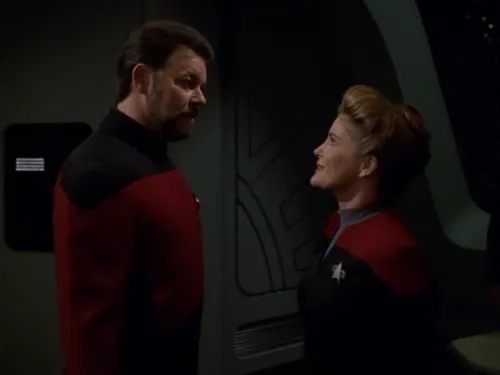
46. Riker meets Captain Janeway(1996) After Voyager was lost in the Delta Quadrant, I bet you lost all hope for any crossover episodes. Well, fear not! VOY 2x18: Death Wish gives us a crossover with Commander William Riker from TNG all thanks to a little omnipotent power from Q!
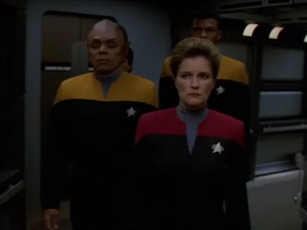
47. Janeway murders Tuvix(1996) When a wacky transporter accident combines the DNA and memories of the ship's two most polar-opposite members, Tuvok and Neelix, in VOY 2x24: Tuvix, Janeway must make a command decision about who lives and who dies... sorry Tuvix, you're on the chopping block! Star Trek: Lower Decks famously revisited this story in LOW 4x01: Twovix.
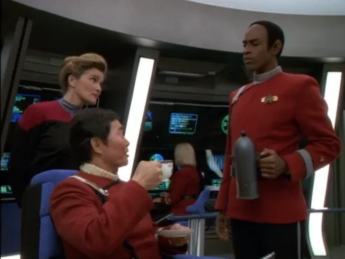
48. Tuvok serves tea to Captain Sulu(1996) Janeway joins Tuvok in a journey back through his memory, back to when he was an ensign under the command of Captain Hikaru Sulu. In VOY 3x02: Flashback, Tuvok serves tea to the captain on the bridge, and then after Sulu makes a joke about Tuvok currying favor for a promotion, he logically denies it.
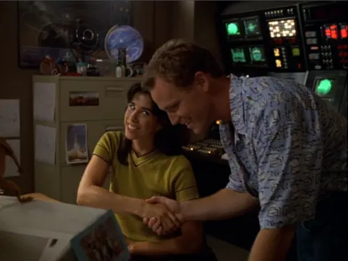
49. Tom thinks Rain Robinson's lab is “groovy”(1996) When the crew of Voyager travels back in time to 1996 in VOY 3x08 & 3x09: Future's End, they have a little bit of trouble fitting in. No one tries harder and still gets things wrong like Tom Paris, who uses all of his knowledge of “ancient” Earth slang, but is a few decades off with his lingo. Rain Robinson (played by Sarah Silverman) finds Tom's mistakes to be highly suspicious, but also a bit charming.
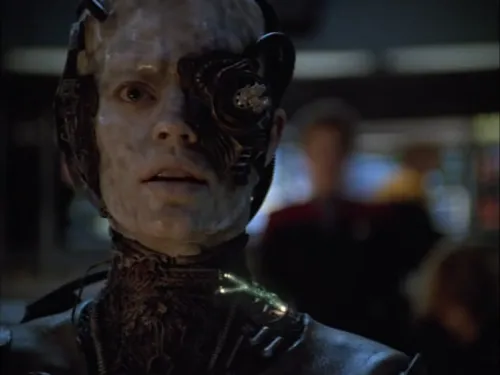
50. Seven of Nine is severed from the Borg collective(1997) Similar to the season four refresh in DS9, Voyager had its own makeover in its season four opener VOY 4x01: Scorpion, Part II. After temporarily forming a truce with the Borg, Janeway works with a drone with the designation Seven of Nine to battle their mutual enemy. Janeway's first officer is highly skeptical at the alliance, and convinces Janeway to make contingency plans for bad outcomes. When Seven of Nine attempts to take over the ship, Janeway puts her plan into action, severing the drone from the collective. Seven of Nine would go on to become part of the crew while constantly struggling to regain her humanity.
(1997) Not only is this event notable because it's the first time that a warp core ejection from a starship was depicted on-screen in Trek, but it's also a small miracle that it actually worked! After all, it seems like, for maximum drama, whenever someone needs to eject the warp core, the ejection systems are always damaged or offline! This impressively successful ejection occurs in VOY 4x03: Day of Honor.
(1997) In VOY 4x09: Year of Hell, Part II, after nearly a year of constant attacks by the Krenim Imperium, Janeway takes greater and greater risks to keep the ship together. After refusing to remain in The Doctor's care after receiving severe burns, The Doctor has no choice: “Captain Kathryn Janeway, under Starfleet Medical Regulation 121 Section A, I, the Chief Medical Officer, do hereby relieve you of your active command, effective immediately”. Janeway then refuses to comply with The Doctor's order and says she'll happily face a court martial once she gets the crew home. Fortunately for Janeway, this all took place in an alternate timeline, so the failure to follow orders never appears on her record.
(1998) After travelling halfway across the galaxy through an alien communications network in VOY 4x14: Message in a Bottle, The Doctor finds himself on an experimental Starfleet ship with a new Emergency Medical Hologram. Played by Andy Dick, the EMH Mark II and The Doctor constantly antagonize each other while still having to work together to retake the ship from Romulans.
(1998) In a rare moment of self-awareness in VOY 5x05: Once Upon a Time, Neelix is flummoxed when The Doctor cheerily says, “Neelix! What a pleasure to see you!”. The Doctor was happy that Neelix had arrived to take over care for Naomi, who had started asking The Doctor uncomfortable questions about her missing mother, but the look on Neelix's face says it all: “No one is ever excited to see me, what is The Doctor on about??”
(1999) VOY 5x12: Bride of Chaotica! is a delightful romp in a campy 1930s sci-fi melodrama, parodying Voyager's own genre. In it, Captain Janeway must play the role of Arachnia, Queen of the Spider People. Her mission? To lull Dr. Chaotica into a sense of security so he'll lower his lightning shield, allowing Captain Proton (Tom Paris) to destroy Chaotica's Death Ray and save the galaxy!
(1999) In VOY 5x22: Someone to Watch Over Me, The Doctor provides Seven with lessons in romantic affairs, and together they sing a duet of “You Are My Sunshine” where The Doctor starts to realize that he, himself, is falling for Seven. This touching moment between the two is a memorable one.
(1999) The Doctor is known for having a touch of arrogance when it comes to his own abilities. In VOY 6x04: Tinker Tenor Doctor Spy, he takes it a step further when he starts to daydream about being a hero. In his fantasy, he becomes the acting captain of the ship after Janeway is killed, and he successfully thwarts an attack by the Borg by firing his “photonic cannon”, a devastating weapon of his own design.
(2000) The Doctor visits his creator in VOY 6x24: Life Line after learning that he's terminally ill. Hoping to provide a unique medical viewpoint, The Doctor has his progress stunted at every turn by the stubborn Dr. Zimmerman. Surrounded by Zimmerman's holographic assistants and pets, The Doctor eventually has enough and says, “Computer, deactivate iguana”, removing one of the beloved pets from the room, much to Zimmerman's frustration.
(2000) When captured by a race of aliens who are intolerant of holograms in VOY 7x07: Body and Soul, The Doctor has no choice but to hide in Seven of Nine's implants, giving him control of her body. After indulging in food and drink while controlling her body, not to mention becoming sexually aroused, The Doctor returns to his normal self to find that Seven of Nine is none too pleased by his actions.
Spoiler »
(2001) I suppose it was never a guarantee that they'd make it home by the end of the series, but VOY 7x25/26: Endgame does effectively wrap up Voyager's story with a satisfying “happily ever after” right alongside a huge victory. Wouldn't it have been a let-down if Voyager just got blown up and everyone died in the finale? Ha! I wonder whatever happened to all those Ocampa who were sealed underground by the Caretaker? Oh well! Our main characters are home!
I could easily pick sixty more moments, but these will have to do for today. Once again, Happy Birthday to Star Trek!◼